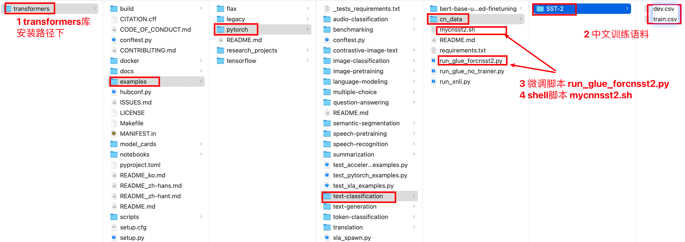

9 迁移学习实践
学习目标¶
- 了解并掌握迁移学习-中文分类任务开发
- 了解并掌握迁移学习-中文填空任务开发
- 了解并掌握迁移学习-中文句子关系任务
- 了解通过微调脚本微调后模型的使用方法
1 通过微调方式进行迁移学习的两种类型¶
- 类型一: 直接加载预训练模型进行输入文本的特征表示, 后接自定义网络进行微调输出结果
- 类型二: 使用指定任务类型的微调脚本微调预训练模型, 后接带有输出头的预定义网络输出结果
- 说明: 所有类型的实战演示, 都将针对中文文本进行
2 迁移学习-中文分类¶
1 任务介绍¶
- 直接加载预训练模型进行输入文本的特征表示, 后接自定义网络进行微调输出结果
2 数据介绍¶
- 数据文件有三个train.csv，test.csv，validation.csv，数据样式都是一样的。
label,text
1,选择珠江花园的原因就是方便，有电动扶梯直接到达海边，周围餐馆、食廊、商场、超市、摊位一应俱全。酒店装修一般，但还算整洁。 泳池在大堂的屋顶，因此很小，不过女儿倒是喜欢。 包的早餐是西式的，还算丰富。 服务吗，一般
1,15.4寸笔记本的键盘确实爽，基本跟台式机差不多了，蛮喜欢数字小键盘，输数字特方便，样子也很美观，做工也相当不错
0,房间太小。其他的都一般。。。。。。。。。
0,"1.接电源没有几分钟,电源适配器热的不行. 2.摄像头用不起来. 3.机盖的钢琴漆，手不能摸，一摸一个印. 4.硬盘分区不好办."
1,"今天才知道这书还有第6卷,真有点郁闷:为什么同一套书有两种版本呢?当当网是不是该跟出版社商量商量,单独出个第6卷,让我们的孩子不会有所遗憾。"
- 通过huggingface的datasets工具，加载信息文件信息如下
加载训练集
dataset_train---> Dataset({
features: ['label', 'text'],
num_rows: 9600
})
{'label': [1, 1, 0], 'text': ['选择珠江花园的原因就是方便，有电动扶梯直接到达海边，周围餐馆、食廊、商场、超市、摊位一应俱全。酒店装修一般，但还算整洁。 泳池在大堂的屋顶，因此很小，不过女儿倒是喜欢。 包的早餐是西式的，还算丰富。 服务吗，一般', '15.4寸笔记本的键盘确实爽，基本跟台式机差不多了，蛮喜欢数字小键盘，输数字特方便，样子也很美观，做工也相当不错', '房间太小。其他的都一般。。。。。。。。。']}
加载测试集
my_dataset_test---> Dataset({
features: ['label', 'text'],
num_rows: 1200
})
{'label': [1, 0, 0], 'text': ['这个宾馆比较陈旧了，特价的房间也很一般。总体来说一般', '怀着十分激动的心情放映，可是看着看着发现，在放映完毕后，出现一集米老鼠的动画片！开始还怀疑是不是赠送的个别现象，可是后来发现每张DVD后面都有！真不知道生产商怎么想的，我想看的是猫和老鼠，不是米老鼠！如果厂家是想赠送的话，那就全套米老鼠和唐老鸭都赠送，只在每张DVD后面添加一集算什么？？简直是画蛇添足！！', '还稍微重了点，可能是硬盘大的原故，还要再轻半斤就好了。其他要进一步验证。贴的几种膜气泡较多，用不了多久就要更换了，屏幕膜稍好点，但比没有要强多了。建议配赠几张膜让用用户自己贴。']}
加载验证集
my_dataset_validation---> Dataset({
features: ['label', 'text'],
num_rows: 1200
})
{'label': [1, 1, 0], 'text': ['這間酒店環境和服務態度亦算不錯,但房間空間太小~~不宣容納太大件行李~~且房間格調還可以~~ 中餐廳的廣東點心不太好吃~~要改善之~~~~但算價錢平宜~~可接受~~ 西餐廳格調都很好~~但吃的味道一般且令人等得太耐了~~要改善之~~', '<荐书> 推荐所有喜欢<红楼>的红迷们一定要收藏这本书,要知道当年我听说这本书的时候花很长时间去图书馆找和借都没能如愿,所以这次一看到当当有,马上买了,红迷们也要记得备货哦!', '商品的不足暂时还没发现，京东的订单处理速度实在.......周二就打包完成，周五才发货...']}
- 通过huggingface的datasets工具，加载代码如下
def dm_file2dataset():
# 实例化数据源对象my_dataset_train
print('\n加载训练集')
my_dataset_train = load_dataset('csv', data_files='./mydata1/train.csv', split='train')
print('dataset_train--->', my_dataset_train)
print(my_dataset_train[0:3])
# 实例化数据源对象my_dataset_test
print('\n加载测试集')
my_dataset_test = load_dataset('csv', data_files='./mydata1/test.csv', split='train')
print('my_dataset_test--->', my_dataset_test)
print(my_dataset_test[0:3])
print('\n加载验证集')
# 实例化数据源对象my_dataset_train
my_dataset_validation = load_dataset('csv', data_files='./mydata1/validation.csv', split="train")
print('my_dataset_validation--->', my_dataset_validation)
print(my_dataset_validation[0:3])
- 导入工具包和辅助工具实例化对象
# 导入工具包
import torch
from datasets import load_dataset
from transformers import BertTokenizer, BertModel
from transformers import AdamW
import time
# 加载字典和分词工具 实例化分词工具
my_tokenizer = BertTokenizer.from_pretrained('bert-base-chinese')
# 加载预训练模型 实例化预训练模型
my_model_pretrained = BertModel.from_pretrained('bert-base-chinese')
3 数据预处理¶
对持久化文件中数据进行处理，以满足模型训练要求。
- 数据预处理和相关测试函数
# 数据集处理自定义函数
def collate_fn1(data):
# data传过来的数据是list eg: 批次数8，8个字典
# [{'text':'xxxx','label':0} , {'text':'xxxx','label':1}, ...]
sents = [i['text'] for i in data]
labels = [i['label'] for i in data]
# 编码text2id 对多句话进行编码用batch_encode_plus函数
data = my_tokenizer.batch_encode_plus(batch_text_or_text_pairs=sents,
truncation=True,
padding='max_length',
max_length=500,
return_tensors='pt',
return_length=True)
# input_ids:编码之后的数字
# attention_mask:是补零的位置是0,其他位置是1
input_ids = data['input_ids']
attention_mask = data['attention_mask']
token_type_ids = data['token_type_ids']
labels = torch.LongTensor(labels)
# 返回text2id信息 掩码信息 句子分段信息 标签y
return input_ids, attention_mask, token_type_ids, labels
# 测试数据
def dm01_test_dataset():
# 实例化数据源 通过训练文件
dataset_train = load_dataset('csv', data_files='./mydata1/train.csv', split="train")
print('dataset_train--->', dataset_train)
# 实例化数据迭代器 mydataloader
mydataloader = torch.utils.data.DataLoader(dataset_train,
batch_size=8,
collate_fn=collate_fn1,
shuffle=True,
drop_last=True)
print('mydataloader--->', len(mydataloader))
# 调整数据迭代器对象数据返回格式
for i, (input_ids, attention_mask, token_type_ids, labels) in enumerate(mydataloader):
print(len(mydataloader))
print(input_ids.shape, attention_mask.shape, token_type_ids.shape, labels)
# 打印句子text2id后的信息
print('input_ids', input_ids)
# 打印句子attention掩码信息
print('attention_mask', attention_mask)
# 打印句子分段信息
print('token_type_ids', token_type_ids)
# 打印目标y信息
print('labels', labels)
break
- 程序运行效果
# 显示训练集字段和样本数目
dataset_train---> Dataset({
features: ['label', 'text'],
num_rows: 9600
})
mydataloader---> 1200
# 显示处理后送给模型的数据信息
torch.Size([8, 500]) torch.Size([8, 500]) torch.Size([8, 500]) tensor([1, 1, 0, 0, 1, 0, 0, 0])
# 句子text2id后的信息
input_ids tensor([[ 101, 6848, 2885, ..., 0, 0, 0],
[ 101, 8115, 119, ..., 0, 0, 0],
[ 101, 2791, 7313, ..., 0, 0, 0],
...,
[ 101, 3322, 1690, ..., 0, 0, 0],
[ 101, 1457, 1457, ..., 0, 0, 0],
[ 101, 6821, 3315, ..., 0, 0, 0]])
# 句子注意力机制掩码信息
attention_mask tensor([[1, 1, 1, ..., 0, 0, 0],
[1, 1, 1, ..., 0, 0, 0],
[1, 1, 1, ..., 0, 0, 0],
...,
[1, 1, 1, ..., 0, 0, 0],
[1, 1, 1, ..., 0, 0, 0],
[1, 1, 1, ..., 0, 0, 0]])
# 句子分段信息
token_type_ids tensor([[0, 0, 0, ..., 0, 0, 0],
[0, 0, 0, ..., 0, 0, 0],
[0, 0, 0, ..., 0, 0, 0],
...,
[0, 0, 0, ..., 0, 0, 0],
[0, 0, 0, ..., 0, 0, 0],
[0, 0, 0, ..., 0, 0, 0]])
# 句子的标签信息
labels tensor([1, 1, 0, 0, 1, 0, 0, 0])
4 自定义下游任务网络模型¶
自定义单层的全连接网络作为微调网络。根据实际经验, 自定义的微调网络参数总数应大于0.5倍的训练数据量, 小于10倍的训练数据量, 这样有助于模型在合理的时间范围内收敛
- 自定义下游任务网络模型
# 定义下游任务模型
class MyModel(torch.nn.Module):
def __init__(self):
super().__init__()
# 定义全连接层
self.fc = torch.nn.Linear(768, 2)
def forward(self, input_ids, attention_mask, token_type_ids):
# 预训练模型不训练 只进行特征抽取 [8,500] ---> [8,768]
with torch.no_grad():
out = my_model_pretrained(input_ids=input_ids,
attention_mask=attention_mask,
token_type_ids=token_type_ids)
# 下游任务模型训练 数据经过全连接层 [8,768] --> [8,2]
out = self.fc(out.last_hidden_state[:, 0])
# 数据进行softmax归一化 分类概率值
out = out.softmax(dim=1)
return out
- 模型测试
# 下游任务模型输入和输出测试
def dm02_test_mymodel():
# 实例化数据源 通过训练文件
dataset_train = load_dataset('csv', data_files='./mydata1/train.csv', split="train")
# print('dataset_train--->', dataset_train)
# 实例化数据迭代器 mydataloader
mydataloader = torch.utils.data.DataLoader(dataset_train,
batch_size=8,
collate_fn=collate_fn1,
shuffle=False,
drop_last=True)
# print('mydataloader--->', len(mydataloader))
# 实例化下游任务模型
mymodel = MyModel()
print('mymodel--->', mymodel)
# 调整数据迭代器对象数据返回格式
for i, (input_ids, attention_mask, token_type_ids, labels) in enumerate(mydataloader):
print(len(mydataloader))
# print(input_ids.shape, attention_mask.shape, token_type_ids.shape, labels)
# 数据送给模型
y_out = mymodel(input_ids, attention_mask, token_type_ids)
print('y_out---->', y_out.shape, y_out)
break
- 输出效果
# 模型信息打印
mymodel---> MyModel(
(fc): Linear(in_features=768, out_features=2, bias=True)
)
# 模型运算后分类结果展示
y_out----> torch.Size([8, 2]) tensor([[0.4062, 0.5938],
[0.2788, 0.7212],
[0.3671, 0.6329],
[0.2496, 0.7504],
[0.2995, 0.7005],
[0.2566, 0.7434],
[0.2537, 0.7463],
[0.3832, 0.6168]], grad_fn=<SoftmaxBackward>)
5 模型训练¶
# 模型训练
def dm03_train_model():
# 实例化下游任务模型my_model
my_model = MyModel()
# 实例化优化器my_optimizer
my_optimizer = AdamW(my_model.parameters(), lr=5e-4)
# 实例化损失函数my_criterion
my_criterion = torch.nn.CrossEntropyLoss()
# 实例化数据源对象my_dataset_train
my_dataset_train = load_dataset('csv', data_files='./mydata1/train.csv', split="train")
print('dataset_train--->', my_dataset_train)
# 不训练预训练模型 只让预训练模型计算数据特征 不需要计算梯度
for param in my_model_pretrained.parameters():
param.requires_grad_(False)
# 设置训练参数
epochs = 3
# 设置模型为训练模型
my_model.train()
# 外层for循环 控制轮数
for eporch_idx in range(epochs):
# 每次轮次开始计算时间
starttime = (int)(time.time())
# 实例化数据迭代器对象my_dataloader
my_dataloader = torch.utils.data.DataLoader(my_dataset_train,
batch_size=8,
collate_fn=collate_fn1,
shuffle=True,
drop_last=True)
# 内层for循环 控制迭代次数
for i, (input_ids, attention_mask, token_type_ids, labels) in enumerate(my_dataloader, start=1):
# 给模型喂数据 [8,500] --> [8,2]
my_out = my_model(input_ids=input_ids,
attention_mask=attention_mask,
token_type_ids=token_type_ids)
# 计算损失
my_loss = my_criterion(my_out, labels)
# 梯度清零
my_optimizer.zero_grad()
# 反向传播
my_loss.backward()
# 梯度更新
my_optimizer.step()
# 每5次迭代 算一下准确率
if i % 5 == 0:
out = my_out.argmax(dim=1) # [8,2] --> (8,)
accuracy = (out == labels).sum().item() / len(labels)
print('轮次:%d 迭代数:%d 损失:%.6f 准确率%.3f 时间%d' \
%(eporch_idx, i, my_loss.item(), accuracy, (int)(time.time())-starttime))
# 每个轮次保存模型
torch.save(my_model.state_dict(), './my_model_%d.bin' % (eporch_idx + 1))
- 模型训练效果输出
轮次:0 迭代数:5 损失:0.735494 准确率0.250 时间40
轮次:0 迭代数:10 损失:0.614211 准确率0.875 时间81
轮次:0 迭代数:15 损失:0.635408 准确率0.750 时间119
轮次:0 迭代数:20 损失:0.575522 准确率1.000 时间157
轮次:0 迭代数:25 损失:0.661196 准确率0.625 时间196
轮次:0 迭代数:30 损失:0.546462 准确率0.875 时间234
轮次:0 迭代数:35 损失:0.609517 准确率0.875 时间272
轮次:0 迭代数:40 损失:0.529246 准确率1.000 时间310
轮次:0 迭代数:45 损失:0.474820 准确率1.000 时间348
轮次:0 迭代数:50 损失:0.540127 准确率0.875 时间387
轮次:0 迭代数:55 损失:0.575326 准确率0.625 时间426
# 从以上的训练输出效果来看，预训练模型是十分强大的，只需要短短的几次迭代，就可以让准确率上88%
6 模型评估¶
# 模型测试
def dm04_evaluate_model():
# 实例化数据源对象my_dataset_test
print('\n加载测试集')
my_dataset_test = load_dataset('csv', data_files='./mydata1/test.csv', split='train')
print('my_dataset_test--->', my_dataset_test)
# print(my_dataset_test[0:3])
# 实例化下游任务模型my_model
path = './my_model_3.bin'
my_model = MyModel()
my_model.load_state_dict(torch.load(path))
print('my_model-->', my_model)
# 设置下游任务模型为评估模式
my_model.eval()
# 设置评估参数
correct = 0
total = 0
# 实例化化dataloader
my_loader_test = torch.utils.data.DataLoader(my_dataset_test,
batch_size=8,
collate_fn=collate_fn1,
shuffle=True,
drop_last=True)
# 给模型送数据 测试预测结果
for i, (input_ids, attention_mask, token_type_ids,
labels) in enumerate(my_loader_test):
# 预训练模型进行特征抽取
with torch.no_grad():
my_out = my_model(input_ids=input_ids,
attention_mask=attention_mask,
token_type_ids=token_type_ids)
# 贪心算法求预测结果
out = my_out.argmax(dim = 1)
# 计算准确率
correct += (out == labels).sum().item()
total += len(labels)
# 每5次迭代打印一次准确率
if i % 5 == 0:
print(correct / total, end=" ")
print(my_tokenizer.decode(input_ids[0], skip_special_tokens=True), end=" ")
print('预测值 真实值:', out[0].item(), labels[0].item())
- 输出效果:
0.875 我 没 有 收 到 这 本 书 ， 我 明 明 和 另 外 一 本 一 起 买 的 ， 服 务 也 不 好 。 至 少 应 该 让 我 知 道 这 个 情 况 在 ！ 预测值 真实值: 0 0
0.8125 也 许 这 不 算 一 个 很 好 的 理 由, 但 是 我 之 所 以 喜 欢 读 书 而 不 是 看 网 上 的 资 料 什 么 的, 就 是 喜 欢 闻 着 书 香. 这 本 书 可 能 是 印 刷 的 油 墨 不 好 还 是 什 么 原 因, 感 觉 臭 臭 的 不 好 闻. 里 面 是 一 些 关 于 中 式 英 语 的 小 趣 闻, 有 些 小 乐 趣, 但 感 觉 对 于 有 浓 重 中 式 思 维 习 惯 说 英 说 的 人 来 说 才 比 较 有 点 用 处. 预测值 真实值: 1 0
0.8409090909090909 1. 有 急 事 出 去 ， 要 们 童 叫 出 租 车 ， 他 们 就 叫 酒 店 里 的 黑 车 ， 价 格 是 普 通 出 租 价 的 两 倍 。 你 提 出 不 要 酒 店 的 黑 车 时 ， 他 们 就 告 诉 你 外 面 拦 不 到 出 租 车 ， 我 们 自 己 走 出 去 时 ， 外 面 出 租 车 随 时 可 以 拦 到 。 住 店 期 间 不 止 一 次 发 生 。 预测值 真实值: 0 0
0.828125 这 本 书 中 的 图 片 很 让 人 触 动 ， 比 如 为 劳 拉 祈 祷 的 校 友 ， 惠 特 尼 和 马 特 的 笑 容 ， 很 动 人 。 预测值 真实值: 1 1
0.8511904761904762 这 是 我 住 过 的 最 差 的 酒 店 ， 房 间 气 味 难 闻 ， 刚 打 了 灭 蚊 药 水 ， 换 了 三 个 房 间 还 是 如 此 ， 服 务 员 说 ： 住 久 了 就 习 惯 了 ， 每 个 宾 馆 都 有 自 己 的 味 道 。 考 ！ 我 又 不 是 来 体 验 生 活 的 。 周 围 环 境 复 杂 ， 脏 乱 差 。 预测值 真实值: 0 0
3 迁移学习-中文填空¶
1 任务介绍¶
# 输入一句话，MASK一个字，训练模型进行填空
[CLS] 选 择 珠 江 花 园 的 原 因 就 是 方 便 ， 有 [MASK] 动 扶 梯 直 接 到 达 海 边 ， 周 围 餐 馆 [SEP]
# 本句MASK的字为“电”
2 数据介绍¶
- 数据文件有三个train.csv，test.csv，validation.csv，数据样式都是一样的。
label,text
1,选择珠江花园的原因就是方便，有电动扶梯直接到达海边，周围餐馆、食廊、商场、超市、摊位一应俱全。酒店装修一般，但还算整洁。 泳池在大堂的屋顶，因此很小，不过女儿倒是喜欢。 包的早餐是西式的，还算丰富。 服务吗，一般
1,15.4寸笔记本的键盘确实爽，基本跟台式机差不多了，蛮喜欢数字小键盘，输数字特方便，样子也很美观，做工也相当不错
0,房间太小。其他的都一般。。。。。。。。。
0,"1.接电源没有几分钟,电源适配器热的不行. 2.摄像头用不起来. 3.机盖的钢琴漆，手不能摸，一摸一个印. 4.硬盘分区不好办."
1,"今天才知道这书还有第6卷,真有点郁闷:为什么同一套书有两种版本呢?当当网是不是该跟出版社商量商量,单独出个第6卷,让我们的孩子不会有所遗憾。"
- 导入工具包和辅助工具实例化对象
import torch
from torch.utils.data import DataLoader
from datasets import load_dataset
from transformers import BertTokenizer, BertModel
from transformers import AdamW
import time
# 加载字典和分词工具
my_tokenizer = BertTokenizer.from_pretrained('bert-base-chinese')
# 加载预训练模型
my_model_pretrained = BertModel.from_pretrained('bert-base-chinese')
3 数据预处理¶
对持久化文件中数据进行处理，以满足模型训练要求。
- 数据预处理和相关测试函数
# 数据集处理自定义函数
def collate_fn2(data):
sents = [i['text'] for i in data]
# 文本数值化
data = my_tokenizer.batch_encode_plus(batch_text_or_text_pairs=sents,
truncation=True,
padding='max_length',
max_length=32,
return_tensors='pt',
return_length=True)
# input_ids 编码之后的数字
# attention_mask 是补零的位置是0,其他位置是1
input_ids = data['input_ids']
attention_mask = data['attention_mask']
token_type_ids = data['token_type_ids']
# 把第16个词固定替换为mask
labels = input_ids[:, 16].reshape(-1).clone() # 取出数据8句话 在第16个位置clone出来 做标签
input_ids[:, 16] = my_tokenizer.get_vocab()[my_tokenizer.mask_token]
labels = torch.LongTensor(labels)
# tmpa = input_ids[:, 16]
# print('tmpa--->', tmpa, tmpa.shape) # torch.Size([8]
# print('labels-->', labels.shape, labels) # torch.Size([8]
return input_ids, attention_mask, token_type_ids, labels
# 数据源 数据迭代器 测试
def dm01_test_dataset():
# 生成数据源dataset对象
dataset_train_tmp = load_dataset('csv', data_files='./mydata1/train.csv', split="train")
# print('dataset_train_tmp--->', dataset_train_tmp)
# 按照条件过滤数据源对象
my_dataset_train = dataset_train_tmp.filter(lambda x: len(x['text']) > 32)
# print('my_dataset_train--->', my_dataset_train)
# print('my_dataset_train[0:3]-->', my_dataset_train[0:3])
# 通过dataloader进行迭代
mydataloader = DataLoader(my_dataset_train, batch_size=8, collate_fn=collate_fn2, shuffle=True, drop_last=True)
print('mydataloader--->', mydataloader)
# 不训练,不需要计算梯度
for param in my_model_pretrained.parameters():
param.requires_grad_(False)
# 调整数据迭代器对象数据返回格式
for i, (input_ids, attention_mask, token_type_ids, labels) in enumerate(mydataloader):
print(input_ids.shape, attention_mask.shape, token_type_ids.shape, labels)
print('\n第1句mask的信息')
print(my_tokenizer.decode(input_ids[0]))
print(my_tokenizer.decode(labels[0]))
print('\n第2句mask的信息')
print(my_tokenizer.decode(input_ids[1]))
print(my_tokenizer.decode(labels[1]))
break
- 程序运行效果
mydataloader---> <torch.utils.data.dataloader.DataLoader object at 0x7fbe28611cd0>
torch.Size([8, 32]) torch.Size([8, 32]) torch.Size([8, 32]) tensor([3160, 1905, 8152, 7415, 7231, 1331, 2360, 5831])
第1句mask的信息
[CLS] 文 章 总 体 不 错 ， 不 过 太 多 的 历 史 资 [MASK] 重 复 ， 感 觉 没 有 步 步 好 看 了 ， 作 [SEP]
料
第2句mask的信息
[CLS] 第 一 散 热 一 般 。 。 。 用 了 一 会 托 腕 [MASK] 就 发 烫 了? 第 二 液 晶 屏 和 主 机 部 [SEP]
处
迁移学习 中文填空 End
4 自定义下游任务网络模型¶
- 自定义下游任务网络模型
# 定义下游任务模型
class MyModel(torch.nn.Module):
def __init__(self):
super().__init__()
# 定义全连接层
self.decoder = torch.nn.Linear(768, my_tokenizer.vocab_size, bias=False)
# 设置全连接层偏置为零
self.decoder.bias = torch.nn.Parameter(torch.zeros(my_tokenizer.vocab_size))
def forward(self, input_ids, attention_mask, token_type_ids):
# 预训练模型不进行训练
with torch.no_grad():
out = my_model_pretrained(input_ids=input_ids,
attention_mask=attention_mask,
token_type_ids=token_type_ids)
# 下游任务进行训练 形状[8,768] ---> [8, 21128]
out = self.decoder(out.last_hidden_state[:, 16])
# 返回
return out
- 模型测试
# 模型输入和输出测试
def dm02_test_mymodel():
# 生成数据源dataset对象
dataset_train_tmp = load_dataset('csv', data_files='./mydata1/train.csv', split="train")
# print('dataset_train_tmp--->', dataset_train_tmp)
# 按照条件过滤数据源对象
my_dataset_train = dataset_train_tmp.filter(lambda x: len(x['text']) > 32)
# print('my_dataset_train--->', my_dataset_train)
# print('my_dataset_train[0:3]-->', my_dataset_train[0:3])
# 通过dataloader进行迭代
mydataloader = DataLoader(my_dataset_train, batch_size=8, collate_fn=collate_fn2, shuffle=True, drop_last=True)
print('mydataloader--->', mydataloader)
# 不训练,不需要计算梯度
for param in my_model_pretrained.parameters():
param.requires_grad_(False)
# 实例化下游任务模型
mymodel = MyModel()
# 调整数据迭代器对象数据返回格式
for i, (input_ids, attention_mask, token_type_ids, labels) in enumerate(mydataloader):
print(input_ids.shape, attention_mask.shape, token_type_ids.shape, labels)
print('\n第1句mask的信息')
print(my_tokenizer.decode(input_ids[0]))
print(my_tokenizer.decode(labels[0]))
print('\n第2句mask的信息')
print(my_tokenizer.decode(input_ids[1]))
print(my_tokenizer.decode(labels[1]))
# 给模型喂数据 [8,768] ---> [8,21128] 填空就是分类 21128个单词中找一个单词
myout = mymodel(input_ids, attention_mask, token_type_ids)
print('myout--->', myout.shape, myout)
break
- 输出效果
mydataloader---> <torch.utils.data.dataloader.DataLoader object at 0x7fd7c0765c10>
torch.Size([8, 32]) torch.Size([8, 32]) torch.Size([8, 32]) tensor([ 702, 6381, 857, 8024, 2218, 1961, 3175, 2141])
第1句mask的信息
[CLS] 很 重, 背 出 去 很 累. 好 象 屏 幕 上 有 [MASK] 亮 点, 不 过 很 小 ( 屏 本 来 就 很 小 [SEP]
个
第2句mask的信息
[CLS] 我 于 11 月 22 日 订 购 了 《 杜 拉 拉 升 职 [MASK] 》 并 已 通 过 银 行 付 款 ， 为 什 么 订 [SEP]
记
myout---> torch.Size([8, 21128]) tensor([[-0.3201, 0.3877, 0.1041, ..., 0.2262, 0.5397, 0.5053],
[ 0.0626, 0.1335, 0.7057, ..., -0.6277, -0.2287, -0.0532],
[ 0.3807, 0.2024, 0.0514, ..., -0.0113, 0.3084, 0.4678],
...,
[ 0.3452, 0.1774, 0.0127, ..., -0.3960, 0.2417, -0.0260],
[-0.4155, 0.2038, 0.2512, ..., -0.4112, -0.1052, 0.3574],
[ 0.3464, 0.3439, 0.6628, ..., -0.1706, 0.1020, 0.4141]],
grad_fn=<AddmmBackward>)
5 模型训练¶
# 模型训练 - 填空
def dm03_train_model():
# 实例化数据源对象my_dataset_train
dataset_train_tmp = load_dataset('csv', data_files='./mydata1/train.csv', split="train")
my_dataset_train = dataset_train_tmp.filter(lambda x: len(x['text']) > 32)
print('my_dataset_train--->', my_dataset_train)
# 实例化下游任务模型my_model
my_model = MyModel()
# 实例化优化器my_optimizer
my_optimizer = AdamW(my_model.parameters(), lr=5e-4)
# 实例化损失函数my_criterion
my_criterion = torch.nn.CrossEntropyLoss()
# 不训练预训练模型 只让预训练模型计算数据特征 不需要计算梯度
for param in my_model_pretrained.parameters():
param.requires_grad_(False)
# 设置训练参数
epochs = 3
# 设置模型为训练模型
my_model.train()
# 外层for循环 控制轮数
for eporch_idx in range(epochs):
# 实例化数据迭代器对象my_dataloader
my_dataloader = torch.utils.data.DataLoader(my_dataset_train,
batch_size=8,
collate_fn=collate_fn2,
shuffle=True,
drop_last=True)
starttime = (int)(time.time())
# 内层for循环 控制迭代次数
for i, (input_ids, attention_mask, token_type_ids, labels) in enumerate(my_dataloader, start=1):
# 给模型喂数据 [8,32] --> [8,21128]
my_out = my_model(input_ids=input_ids,
attention_mask=attention_mask,
token_type_ids=token_type_ids)
# 计算损失
my_loss = my_criterion(my_out, labels)
# 梯度清零
my_optimizer.zero_grad()
# 反向传播
my_loss.backward()
# 梯度更新
my_optimizer.step()
# 每5次迭代 算一下准确率
if i % 20 == 0:
out = my_out.argmax(dim=1) # [8,21128] --> (8,)
accuracy = (out == labels).sum().item() / len(labels)
print('轮次:%d 迭代数:%d 损失:%.6f 准确率%.3f 时间%d' \
%(eporch_idx, i, my_loss.item(), accuracy, (int)(time.time())-starttime))
# 每个轮次保存模型
torch.save(my_model.state_dict(), './my_model_mask_%d.bin' % (eporch_idx + 1))
- 模型训练效果输出
轮次:2 迭代数:680 损失:0.324525 准确率0.875 时间370
轮次:2 迭代数:700 损失:0.776103 准确率0.750 时间381
轮次:2 迭代数:720 损失:0.681674 准确率0.875 时间392
轮次:2 迭代数:740 损失:0.654384 准确率0.750 时间402
轮次:2 迭代数:760 损失:0.612616 准确率0.875 时间413
轮次:2 迭代数:780 损失:0.918874 准确率0.625 时间424
轮次:2 迭代数:800 损失:0.640087 准确率0.750 时间435
轮次:2 迭代数:820 损失:0.410612 准确率1.000 时间446
轮次:2 迭代数:840 损失:0.395016 准确率1.000 时间457
轮次:2 迭代数:860 损失:0.313001 准确率0.875 时间468
轮次:2 迭代数:880 损失:1.534165 准确率0.750 时间479
轮次:2 迭代数:900 损失:0.384014 准确率0.875 时间490
轮次:2 迭代数:920 损失:0.386283 准确率1.000 时间501
轮次:2 迭代数:940 损失:1.168535 准确率0.750 时间512
轮次:2 迭代数:960 损失:0.568617 准确率0.875 时间522
轮次:2 迭代数:980 损失:1.178597 准确率0.750 时间533
轮次:2 迭代数:1000 损失:0.534274 准确率0.875 时间544
轮次:2 迭代数:1020 损失:0.371301 准确率1.000 时间555
轮次:2 迭代数:1040 损失:0.106059 准确率1.000 时间566
轮次:2 迭代数:1060 损失:1.153722 准确率0.750 时间577
轮次:2 迭代数:1080 损失:0.352150 准确率1.000 时间588
轮次:2 迭代数:1100 损失:1.242567 准确率0.625 时间598
轮次:2 迭代数:1120 损失:0.548795 准确率0.875 时间609
# 只需要3个轮次，就可以填空准确率达到88%以上
6 模型评估¶
# 模型测试：填空
def dm04_evaluate_model():
# 实例化数据源对象my_dataset_test
print('\n加载测试集')
my_dataset_tmp = load_dataset('csv', data_files='./mydata1/test.csv', split='train')
my_dataset_test = my_dataset_tmp.filter(lambda x: len(x['text']) > 32)
print('my_dataset_test--->', my_dataset_test)
# print(my_dataset_test[0:3])
# 实例化下游任务模型my_model
path = './my_model_mask_3.bin'
my_model = MyModel()
my_model.load_state_dict(torch.load(path))
print('my_model-->', my_model)
# 设置下游任务模型为评估模式
my_model.eval()
# 设置评估参数
correct = 0
total = 0
# 实例化化dataloader
my_loader_test = torch.utils.data.DataLoader(my_dataset_test,
batch_size=8,
collate_fn=collate_fn2,
shuffle=True,
drop_last=True)
# 给模型送数据 测试预测结果
for i, (input_ids, attention_mask, token_type_ids,
labels) in enumerate(my_loader_test):
with torch.no_grad():
my_out = my_model(input_ids=input_ids,
attention_mask=attention_mask,
token_type_ids=token_type_ids)
out = my_out.argmax(dim=1)
correct += (out == labels).sum().item()
total += len(labels)
if i % 25 == 0:
print(i+1, my_tokenizer.decode(input_ids[0]))
print('预测值:', my_tokenizer.decode(out[0]), '\t真实值:', my_tokenizer.decode(labels[0]))
print(correct / total)
- 输出效果:
26 [CLS] 大 堂 是 喧 闹 的 ， 房 间 地 毯 是 脏 的 ， [MASK] 室 淋 浴 龙 头 是 坏 的 ， 毛 巾 是 黄 颜 [SEP]
预测值: 寝 真实值: 浴
0.62
51 [CLS] 外 观 漂 亮 ， 13 寸 黄 金 比 例 ， 悬 浮 键 [MASK] 设 计 ， 噪 音 很 低 ， 和 我 公 司 发 的 [SEP]
预测值: 盘 真实值: 盘
0.6625
76 [CLS] 某 些 酒 店 人 员 对 待 顾 客 不 诚 恳 。 说 [MASK] 你 换 房 间 ， 骗 你 说 是 价 钱 贵 的 房 [SEP]
预测值: 让 真实值: 给
0.68
101 [CLS] 看 这 本 书 有 种 感 觉 就 是 作 者 在 苦 口 [MASK] 心 的 告 戒 读 者 如 何 如 何 ， 为 了 证 [SEP]
预测值: 婆 真实值: 婆
0.6775
126 [CLS] 房 间 很 舒 适 也 很 干 净 ， 周 围 虽 然 不 [MASK] 闹 但 很 安 静 ， 离 虹 桥 机 场 很 静 ， [SEP]
预测值: 吵 真实值: 热
0.681
4 迁移学习-中文句子关系¶
1 任务介绍¶
下一句话任务NSP(Next Sentence Prediction) 中文句子关系任务。输入2句话，判断第二句是否为第一句的下半句。
2 数据介绍¶
- 数据文件有三个train.csv，test.csv，validation.csv，数据样式都是一样的。
label,text
1,选择珠江花园的原因就是方便，有电动扶梯直接到达海边，周围餐馆、食廊、商场、超市、摊位一应俱全。酒店装修一般，但还算整洁。 泳池在大堂的屋顶，因此很小，不过女儿倒是喜欢。 包的早餐是西式的，还算丰富。 服务吗，一般
1,15.4寸笔记本的键盘确实爽，基本跟台式机差不多了，蛮喜欢数字小键盘，输数字特方便，样子也很美观，做工也相当不错
0,房间太小。其他的都一般。。。。。。。。。
0,"1.接电源没有几分钟,电源适配器热的不行. 2.摄像头用不起来. 3.机盖的钢琴漆，手不能摸，一摸一个印. 4.硬盘分区不好办."
1,"今天才知道这书还有第6卷,真有点郁闷:为什么同一套书有两种版本呢?当当网是不是该跟出版社商量商量,单独出个第6卷,让我们的孩子不会有所遗憾。"
- 导入工具包和辅助工具实例化对象
import torch
from torch.utils.data import DataLoader
from datasets import load_dataset
from transformers import BertTokenizer, BertModel
from transformers import AdamW
import time
# 加载字典和分词工具
my_tokenizer = BertTokenizer.from_pretrained('bert-base-chinese')
# 加载预训练模型
my_model_pretrained = BertModel.from_pretrained('bert-base-chinese')
3 数据预处理¶
对持久化文件中数据进行处理，以满足模型训练要求。
- 数据预处理和相关测试函数
# 定义数据源类
class MyDataSet(Dataset):
def __init__(self, data_csv_files):
# 生成数据源dataset对象
my_dataset_temp= load_dataset('csv', data_files=data_csv_files, split="train")
# print('my_dataset_temp--->', my_dataset_temp)
# 按照条件过滤数据源对象
self.my_dataset = my_dataset_temp.filter(lambda x: len(x['text']) > 44)
# print('self.my_dataset--->', self.my_dataset)
# print('self.my_dataset[0:3]-->', self.my_dataset[0:3])
def __len__(self):
self.len = len(self.my_dataset)
return self.len # 7472
def __getitem__(self, index):
# 1是下一句话 0不是下一句
label = 1
text = self.my_dataset[index]['text']
sentence1 = text[0:22]
sentence2 = text[22:44]
# 产生负样本: 随机产生0和1 一般概率选中0, 替换为无关的一句话
if random.randint(0, 1) == 0:
j = random.randint(0, self.len - 1)
sentence2 = self.my_dataset[j]['text'][22:44]
label = 0
# 返回两句话 和两句话之间的关系
return sentence1, sentence2, label
# 数据集处理自定义函数
def collate_fn3(data):
sents = [i[:2] for i in data]
labels = [i[2] for i in data]
# 文本数值化
data = my_tokenizer.batch_encode_plus(batch_text_or_text_pairs=sents,
truncation=True,
padding='max_length',
max_length=50, # 44+cls+sep+sep+other = 44+3=47
return_tensors='pt',
return_length=True)
# input_ids 编码之后的数字
# attention_mask 是补零的位置是0,其他位置是1
input_ids = data['input_ids']
attention_mask = data['attention_mask']
token_type_ids = data['token_type_ids']
# 注意labels不要忘记需要转成tensor 1维数组
labels = torch.LongTensor(labels)
return input_ids, attention_mask, token_type_ids, labels
- 数据源 数据迭代器测试
# 定义数据源 DataSet
def dm01_test_dataset():
data_files = './mydata1/train.csv'
mydataset = MyDataSet(data_files)
print('mydataset-->', mydataset, len(mydataset))
# print(mydataset[3])
# 通过dataloader进行迭代
mydataloader = DataLoader(mydataset, batch_size=8, collate_fn=collate_fn3, Tshuffle=True, drop_last=True)
print('mydataloader--->', mydataloader)
for (input_ids, attention_mask, token_type_ids, labels) in mydataloader:
print(my_tokenizer.decode(input_ids[0])) # 打印每个批次的第1句话
print(input_ids.shape, attention_mask.shape, token_type_ids.shape, labels)
break
- 程序运行效果
mydataset--> <__main__.MyDataSet object at 0x7fb4a8471ad0> 7472
mydataloader---> <torch.utils.data.dataloader.DataLoader object at 0x7fb44835d8d0>
# 下面2句话 不是上下文关系
[CLS] 选 择 珠 江 花 园 的 原 因 就 是 方 便 ， 有 电 动 扶 梯 直 接 到 [SEP] 达 海 边 ， 周 围 餐 馆 、 食 廊 、 商 场 、 超 市 、 摊 位 一 应 [SEP] [PAD] [PAD] [PAD]
torch.Size([8, 50]) torch.Size([8, 50]) torch.Size([8, 50]) tensor([1, 1, 1, 0, 0, 0, 1, 0])
# 下面2句话 是上线文关系
[CLS] 选 择 珠 江 花 园 的 原 因 就 是 方 便 ， 有 电 动 扶 梯 直 接 到 [SEP] 忙 忙 碌 碌 镇 和 青 蛙 弗 洛 格 的 成 长 故 事 ， 那 几 本 书 我 [SEP] [PAD] [PAD] [PAD]
4 自定义下游任务网络模型¶
- 自定义下游任务网络模型
# 定义下游任务模型NSP
class MyModel(torch.nn.Module):
def __init__(self):
super().__init__()
# 定义全连接层
self.fc = torch.nn.Linear(768, 2)
def forward(self, input_ids, attention_mask, token_type_ids):
# 预训练模型不训练
with torch.no_grad():
out = my_model_pretrained(input_ids=input_ids,
attention_mask=attention_mask,
token_type_ids=token_type_ids)
# 下游任务模型训练 数据经过全连接层
out = self.fc(out.last_hidden_state[:, 0])
# 数据进行softmax归一化 分类概率值
out = out.softmax(dim=1)
return out
- 模型测试
# NSP模型输入和输出测试
def dm02_test_mymodel():
data_files = './mydata1/train.csv'
mydataset = MyDataSet(data_files)
print('mydataset-->', mydataset, len(mydataset))
# 通过dataloader进行迭代
mydataloader = DataLoader(mydataset, batch_size=8, collate_fn=collate_fn3, shuffle=True, drop_last=True)
print('mydataloader--->', mydataloader)
# 实例化下游任务模型
mymodel = MyModel()
# 给模型喂数据
for (input_ids, attention_mask, token_type_ids, labels) in mydataloader:
print(my_tokenizer.decode(input_ids[0]))
print(input_ids.shape, attention_mask.shape, token_type_ids.shape, labels)
# 给模型喂数据 [8,768] ---> [8,2] nsp任务是二分类
myout = mymodel(input_ids, attention_mask, token_type_ids)
print('myout--->', myout.shape, myout)
break
- 输出效果
mydataset--> <__main__.MyDataSet object at 0x7fe4b86b8610> 7472
mydataloader---> <torch.utils.data.dataloader.DataLoader object at 0x7fe4d8b4ad50>
# 这2句话 第2句话是第1句话的下文
[CLS] 我 家 小 宝 同 学 特 别 喜 爱 卡 梅 拉 系 列 故 事, 每 天 晚 上 [SEP] 睡 觉 前 非 讲 不 可, 那 些 可 爱 的 故 事 会 陪 着 他 进 入 梦 [SEP] [PAD] [PAD] [PAD]
torch.Size([8, 50]) torch.Size([8, 50]) torch.Size([8, 50]) tensor([1, 0, 1, 1, 1, 1, 0, 1])
myout---> torch.Size([8, 2]) tensor([[0.8149, 0.1851],
[0.4211, 0.5789],
[0.7687, 0.2313],
[0.7724, 0.2276],
[0.7527, 0.2473],
[0.7036, 0.2964],
[0.7887, 0.2113],
[0.7259, 0.2741]], grad_fn=<SoftmaxBackward>)
# 这2句话 第2句话不是第1句话的下文
[CLS] 昨 天 我 把 这 套 书 看 完 了 ， 结 尾 我 不 是 很 喜 欢 有 点 太 [SEP] 一 部 分 没 意 思, 而 且 不 值 那 么 多 钱, 上 当 了, 现 在 [SEP] [PAD] [PAD] [PAD]
5 模型训练¶
# 模型训练NSP
def dm03_train_model():
data_files = './mydata1/train.csv'
mydataset = MyDataSet(data_files)
# print('mydataset-->', mydataset, len(mydataset))
# print(mydataset[3])
# 实例化下游任务模型my_model
my_model = MyModel()
# 实例化优化器my_optimizer
my_optimizer = AdamW(my_model.parameters(), lr=5e-4)
# 实例化损失函数my_criterion
my_criterion = torch.nn.CrossEntropyLoss()
# 不训练预训练模型 只让预训练模型计算数据特征 不需要计算梯度
for param in my_model_pretrained.parameters():
param.requires_grad_(False)
# 设置训练参数
epochs = 3
# 设置模型为训练模型
my_model.train()
# 外层for循环 控制轮数
for eporch_idx in range(epochs):
# 实例化数据迭代器对象my_dataloader
my_dataloader = torch.utils.data.DataLoader(mydataset,
batch_size=8,
collate_fn=collate_fn3,
shuffle=True,
drop_last=True)
starttime = (int)(time.time())
# 内存for循环 控制迭代次数
for i, (input_ids, attention_mask, token_type_ids, labels) in enumerate(my_dataloader):
# 给模型喂数据 [8,50] --> [8,2]
my_out = my_model(input_ids=input_ids,
attention_mask=attention_mask,
token_type_ids=token_type_ids)
# 计算损失
my_loss = my_criterion(my_out, labels)
# 梯度清零
my_optimizer.zero_grad()
# 反向传播
my_loss.backward()
# 梯度更新
my_optimizer.step()
# 每5次迭代 算一下准确率
if i % 20 == 0:
out = my_out.argmax(dim=1) # [8,2] --> (8,)
accuracy = (out == labels).sum().item() / len(labels)
print('轮次:%d 迭代数:%d 损失:%.6f 准确率%.3f 时间%d' \
%(eporch_idx, i, my_loss.item(), accuracy, (int)(time.time())-starttime))
# 每个轮次保存模型
torch.save(my_model.state_dict(), './my_model_nsp_%d.bin' % (eporch_idx + 1))
- 模型训练效果输出
轮次:0 迭代数:20 损失:0.535745 准确率0.750 时间13
轮次:0 迭代数:40 损失:0.389325 准确率1.000 时间26
轮次:0 迭代数:60 损失:0.361616 准确率1.000 时间39
轮次:0 迭代数:80 损失:0.417564 准确率0.875 时间52
轮次:0 迭代数:100 损失:0.375896 准确率1.000 时间65
轮次:0 迭代数:120 损失:0.402824 准确率0.875 时间78
轮次:0 迭代数:140 损失:0.650159 准确率0.625 时间91
轮次:0 迭代数:160 损失:0.541370 准确率0.625 时间104
轮次:0 迭代数:180 损失:0.613911 准确率0.625 时间117
轮次:0 迭代数:200 损失:0.449493 准确率0.875 时间130
轮次:0 迭代数:220 损失:0.545564 准确率0.750 时间143
轮次:0 迭代数:240 损失:0.314993 准确率1.000 时间156
轮次:0 迭代数:260 损失:0.409358 准确率1.000 时间169
轮次:0 迭代数:280 损失:0.513622 准确率0.750 时间182
轮次:0 迭代数:300 损失:0.360398 准确率1.000 时间197
轮次:0 迭代数:320 损失:0.430326 准确率0.875 时间210
轮次:0 迭代数:340 损失:0.379781 准确率1.000 时间224
6 模型评估¶
# 模型测试
def dm04_evaluate_model():
# 实例化数据源对象my_dataset_test
data_files = './mydata1/train.csv'
mydataset = MyDataSet(data_files)
# 实例化下游任务模型my_model
path = './my_model_nsp_3.bin'
my_model = MyModel()
my_model.load_state_dict(torch.load(path))
print('my_model-->', my_model)
# 设置下游任务模型为评估模式
my_model.eval()
# 设置评估参数
correct = 0
total = 0
# 实例化化dataloader
my_loader_test = torch.utils.data.DataLoader(mydataset,
batch_size=8,
collate_fn=collate_fn3,
shuffle=True,
drop_last=True)
# 给模型送数据 测试预测结果
for i, (input_ids, attention_mask, token_type_ids,
labels) in enumerate(my_loader_test):
with torch.no_grad():
my_out = my_model(input_ids=input_ids,
attention_mask=attention_mask,
token_type_ids=token_type_ids)
out = my_out.argmax(dim=1)
correct += (out == labels).sum().item()
total += len(labels)
if i % 20 == 0:
print(correct / total)
- 输出效果:
# 每20次迭代 打印一下准确率
0.875
0.9047619047619048
0.8871951219512195
0.8954918032786885
0.8981481481481481
0.8960396039603961
0.8915289256198347
0.8874113475177305
0.8843167701863354
0.8867403314917127
0.8868159203980099
0.8829185520361991
0.8858921161825726
0.8874521072796935
0.8883451957295374
0.8899501661129569
5 迁移学习-微调脚本中文分类¶
1 数据介绍¶
- 使用文本二分类的任务类型SST-2的微调脚本微调中文预训练模型, 后接带有分类输出头的预定义网络输出结果. 目标是判断句子的情感倾向
- 准备中文酒店评论的情感分析语料, 语料样式与SST-2数据集相同, 标签0代表差评, 标签1好评
-
语料存放在与glue_data/同级目录cn_data/下, 其中的SST-2目录包含train.csv和dev.csv
-
train.csv
sentence label
早餐不好,服务不到位,晚餐无西餐,早餐晚餐相同,房间条件不好,餐厅不分吸烟区.房间不分有无烟房. 0
去的时候 ,酒店大厅和餐厅在装修,感觉大厅有点挤.由于餐厅装修本来该享受的早饭,也没有享受(他们是8点开始每个房间送,但是我时间来不及了)不过前台服务员态度好! 1
有很长时间没有在西藏大厦住了，以前去北京在这里住的较多。这次住进来发现换了液晶电视，但网络不是很好，他们自己说是收费的原因造成的。其它还好。 1
非常好的地理位置，住的是豪华海景房，打开窗户就可以看见栈桥和海景。记得很早以前也住过，现在重新装修了。总的来说比较满意，以后还会住 1
交通很方便，房间小了一点，但是干净整洁，很有香港的特色，性价比较高，推荐一下哦 1
酒店的装修比较陈旧，房间的隔音，主要是卫生间的隔音非常差，只能算是一般的 0
酒店有点旧，房间比较小，但酒店的位子不错，就在海边，可以直接去游泳。8楼的海景打开窗户就是海。如果想住在热闹的地带，这里不是一个很好的选择，不过威海城市真的比较小，打车还是相当便宜的。晚上酒店门口出租车比较少。 1
位置很好，走路到文庙、清凉寺5分钟都用不了，周边公交车很多很方便，就是出租车不太爱去（老城区路窄爱堵车），因为是老宾馆所以设施要陈旧些， 1
酒店设备一般，套房里卧室的不能上网，要到客厅去。 0
- dev.csv
sentence label
房间里有电脑，虽然房间的条件略显简陋，但环境、服务还有饭菜都还是很不错的。如果下次去无锡，我还是会选择这里的。 1
我们是5月1日通过携程网入住的，条件是太差了，根本达不到四星级的标准，所有的东西都很陈旧，卫生间水龙头用完竟关不上，浴缸的漆面都掉了，估计是十年前的四星级吧，总之下次是不会入住了。 0
离火车站很近很方便。住在东楼标间，相比较在九江住的另一家酒店，房间比较大。卫生间设施略旧。服务还好。10元中式早餐也不错，很丰富，居然还有青菜肉片汤。 1
坐落在香港的老城区，可以体验香港居民生活，门口交通很方便，如果时间不紧，坐叮当车很好呀！周围有很多小餐馆，早餐就在中远后面的南北嚼吃的，东西很不错。我们定的大床房，挺安静的，总体来说不错。前台结账没有银联！ 1
酒店前台服务差，对待客人不热情。号称携程没有预定。感觉是客人在求他们，我们一定得住。这样的宾馆下次不会入住！ 0
价格确实比较高，而且还没有早餐提供。 1
是一家很实惠的酒店，交通方便，房间也宽敞，晚上没有电话骚扰，住了两次，有一次住５０１房间，洗澡间排水不畅通，也许是个别问题．服务质量很好，刚入住时没有调好宽带，服务员很快就帮忙解决了． 1
位置非常好，就在西街的街口，但是却闹中取静，环境很清新优雅。 1
房间应该超出30平米,是HK同级酒店中少有的大;重装之后,设备也不错. 1
- 语料在服务器上存放路径展示

2 运行代码¶
在run_glue.py同级目录执行以下命令
# 定义DATA_DIR: 微调数据所在路径, 这里我们使用glue_data中的数据作为微调数据
# export DATA_DIR="/root/data/glue_data" # 目前版本暂不需要
# 定义SAVE_DIR: 模型的保存路径, 我们将模型保存在当前目录的bert_finetuning_test文件中
export SAVE_DIR="./bert_finetuning_sst2_test/"
# 使用python运行微调脚本
# --model_name_or_path: 选择具体的模型或者变体, 中文语料上微调, 选择bert-base-uncased
# --task_name: 它将代表对应的任务类型, 如MRPC代表句子对二分类任务
# --do_train: 使用微调脚本进行训练
# --do_eval: 使用微调脚本进行验证
# --max_seq_length: 输入句子的最大长度, 超过则截断, 不足则补齐
# --learning_rate: 学习率
# --num_train_epochs: 训练轮数
# --output_dir $SAVE_DIR: 训练后的模型保存路径
# --overwrite_output_dir: 再次训练时将清空之前的保存路径内容重新写入
# 注1 虚拟机中执行以下命令耗时较长，建议在有GPU的主机上执行
# 注2 该命令已在虚拟机执行，再次执行会覆盖缓存的模型
python run_glue_forcnsst2.py \
--task_name sst2 \
--model_name_or_path bert-base-chinese \
--do_train \
--do_eval \
--train_file "/Users/xxxxxx/transformers/examples/pytorch/text-classification/cn_data/SST-2/train.csv" \
--validation_file "/Users/xxxxxx/transformers/examples/pytorch/text-classification/cn_data/SST-2/dev.csv" \
--max_seq_length 128 \
--learning_rate 2e-5 \
--num_train_epochs 1.0 \
--output_dir "bert-base-uncased-finetuning" \
--overwrite_output_dir
# 注3 本命令已形成mycnsst2.sh shell文件，使用命令直接执行即可。比如： sh mycnnsst2.sh
- 检验效果
# 找到mycnnsst2.sh的文件路径，比如：/Users/xxxxxx/transformers/examples/pytorch/text-classification
(nlp382) xxxxxx@bogon text-classification % sh mycnsst2.sh
# 最终打印模型的验证结果, 准确率高达0.88.
[INFO|trainer.py:2463] 2022-05-15 11:50:30,323 >> ***** Running Evaluation *****
[INFO|trainer.py:2465] 2022-05-15 11:50:30,323 >> Num examples = 1000
[INFO|trainer.py:2468] 2022-05-15 11:50:30,324 >> Batch size = 8
100%|███████████████████████████████████████████████████████████████████████████████████████████████████████████████████████████| 125/125 [04:06<00:00, 1.99s/it]05/15/2022 11:54:39 - INFO - datasets.metric - Removing /Users/xxxxxx/.cache/huggingface/metrics/glue/sst2/default_experiment-1-0.arrow
100%|███████████████████████████████████████████████████████████████████████████████████████████████████████████████████████████| 125/125 [04:06<00:00, 1.97s/it]
***** eval metrics *****
epoch = 1.0
eval_accuracy = 0.885
eval_loss = 0.3328
eval_runtime = 0:04:08.99
eval_samples = 1000
eval_samples_per_second = 4.016
eval_steps_per_second = 0.502
3 查看模型文件内容¶
-rw-r--r-- 1 1390 5 15 11:54 README.md
-rw-r--r-- 1 389 5 15 11:54 all_results.json
-rw-r--r-- 1 216 5 15 11:54 eval_results.json
-rw-r--r-- 1 590 5 15 11:50 trainer_state.json
-rw-r--r-- 1 193 5 15 11:50 train_results.json
-rw-r--r-- 1 3119 5 15 11:50 training_args.bin
-rw-r--r-- 1 439390 5 15 11:50 tokenizer.json
-rw-r--r-- 1 109540 5 15 11:50 vocab.txt
-rw-r--r-- 1 112 5 15 11:50 special_tokens_map.json
-rw-r--r-- 1 322 5 15 11:50 tokenizer_config.json
-rw-r--r-- 1 409150611 5 15 11:50 pytorch_model.bin
-rw-r--r-- 1 1005 5 15 11:50 config.json
4 使用本地微调模型¶
import torch
from transformers import AutoTokenizer, AutoModelForSequenceClassification, AutoModel
def dm01_use_model():
# 0 找到自己预训练模型的路径
mymodelname = '/Users/xxxx/transformers/examples/pytorch/text-classification/bert-base-uncased-finetuning'
print(mymodelname)
# 1 本地加载预训练模型的tokenizer
tokenizer = AutoTokenizer.from_pretrained(mymodelname)
# 2 本地加载 预训练模型 带分类模型头
model = AutoModelForSequenceClassification.from_pretrained(mymodelname)
# model = AutoModelForSequenceClassification.from_pretrained(model_checkpoint, num_labels=2)
# 3 默认情况下 加载预训练模型，不带头
# model2 = AutoModel.from_pretrained(mymodelname)
text = "早餐不好,服务不到位,晚餐无西餐,早餐晚餐相同,房间条件不好"
index = tokenizer.encode(text)
tokens_tensor = torch.tensor([index])
# 使用评估模式
with torch.no_grad():
# 使用模型预测获得结果
result = model(tokens_tensor)
print('result.logits--->', result.logits)
predicted_label = torch.argmax(result.logits).item()
print('预测标签为>', predicted_label)
text1 = "房间应该超出30平米,是HK同级酒店中少有的大;重装之后,设备也不错."
index = tokenizer.encode(text1)
tokens_tensor = torch.tensor([index])
# 使用评估模式
with torch.no_grad():
# 使用模型预测获得结果
result = model(tokens_tensor)
print('result.logits--->', result.logits)
predicted_label = torch.argmax(result[0]).item()
print('预测标签为>', predicted_label)
- 输出效果:
输入文本为: 早餐不好,服务不到位,晚餐无西餐,早餐晚餐相同,房间条件不好
预测标签为: 0
输入文本为: 房间应该超出30平米,是HK同级酒店中少有的大;重装之后,设备也不错.
预测标签为: 1
6 小结¶
- 学习了迁移学习方式中文分类任务开发
- 数据预处理、数据源封装、数据迭代器的使用
- 搭建中文分类任务下游任务模型，并进行模型训练、模型预测
- 学习了迁移学习方式中文填空任务开发
- 数据预处理、数据源封装、数据迭代器的使用
- 搭建中文填空下游任务模型，并进行模型训练、模型预测
- 学习了迁移学习方式中文句子关系任务开发
- 数据预处理、数据源封装、数据迭代器的使用
- 搭建中文句子关系任务模型，并进行模型训练、模型预测